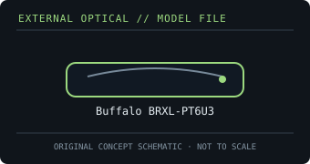

[ OPTICAL DRIVES // IDENTIFIED EXTERNAL MODEL ]
Buffalo BRXL-PT6U3
Portable 6× external BDXL writer. The supplied Boost cable can draw supplemental USB power if the host port cannot power the drive reliably.

IDENTIFICATION: Confirm the full model/suffix against the label and manufacturer documentation. Read capability is not write capability; speed ratings depend on media and recording mode.
Model-specific specifications
| Catalog subcategory | External Blu-ray drives |
|---|---|
| Exact product identifier | Buffalo BRXL-PT6U3 |
| Supported write formats / rates | BD-R up to 6×; BDXL BD-R up to 4×; BD-RE up to 2× (media/layer dependent). DVD±R up to 8×, DVD±R DL up to 6×, DVD-RAM up to 5×, CD-R up to 24× and CD-RW up to 16×. |
| Supported read formats / rates | Reads BD-ROM up to 6× and BD-R/RE including listed BDXL layers; DVD-ROM up to 8×, CD-ROM up to 24×. Also supports the documented recordable/rewritable DVD and CD formats. |
| USB interface and power | USB 3.0 external interface, backward-compatible with USB 2.0; USB bus-powered. The Boost cable provides an additional power connection where needed. |
| Host compatibility | Buffalo product documentation specifies Windows and Mac support for data use; bundled playback/authoring software is Windows-only. Blu-ray movie playback requires suitable host software and system support. |
| Model distinction | BRXL-PT6U3 is the portable 6× unit with USB power assist; do not confuse it with the AC-powered desktop BRXL-16U3. |
Host and media notes
BRXL-PT6U3 is the portable 6× unit with USB power assist; do not confuse it with the AC-powered desktop BRXL-16U3.
- Use the drive only with media types explicitly supported by the exact manual. BDXL, standard BD-R/RE and UHD Blu-ray are distinct capabilities.
- Check operating-system and playback/authoring application support independently; a USB connection alone does not provide Blu-ray codec, protected-video or UHD playback capability.
- For preservation work, record drive model/firmware, host interface, software, media type, checksums and read/verification errors with each image.
Model documentation and specification sources
- Buffalo — BRXL-PT6U3 product specificationsManufacturer product page for the exact portable model (Japanese).
- Buffalo — BRXL-PT6U3 manualsManufacturer manual/download entry for the BRXL-PT6U3.
Manufacturer and manual speed ratings are maxima under supported media conditions and are not a guarantee of actual sustained read/write performance on an individual disc.